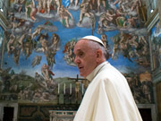

SANTO PADRE
CURIA ROMANA
SERVIZI INFORMAZIONE
CITTA' DEL VATICANO
ANNO LITURGICO
CELEBRAZIONI LITURGICHE
Cerca in Liturgy
Cerca in Liturgy
Cerca in Vatican.va
Calendario delle Celebrazioni
profilo
Cerimonieri e Officiali
Informazioni per le Concelebrazioni
Insegnamenti sulla liturgia del Santo Padre
Studi
Approfondimenti
Pubblicazioni-Interviste del Maestro
Archivio Celebrazioni
Archivio Documenti

Cappelle del Palazzo
@UCEPO